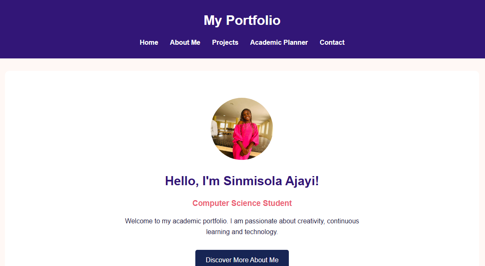

MY CREATIVE SPACE
Ideas, Creativity & Practical Work
Welcome to my project portfolio. This is where I showcase my learning journey, creative experiments and practical application of the skills I am developing in technology. Each project represents an opportunity to explore ideas, solve problems and improve my abilities.

WEB DEVELOPMENT
Personal Portfolio Website
A multi-page academic portfolio developed to introduce my background, showcase my skills and present my work. The website features responsive layouts, navigation and interactive elements.

JAVASCRIPT APPLICATION
Student Academic Planner
A task management application designed to help students organise academic activities, monitor tasks and keep track of important deadlines through interactive features.

CREATIVE DESIGN
Creative Design Project
A collection of visual designs created with Canva. This project explores colour combinations, visual communication, layout and creative presentation.